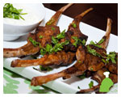

About us
 Biryani pot a traditional Hyderabadi food house. We at Biryani Pot made a commitment to bring a variety of high quality Indian dishes specialized in Hyderbadi Dum Biryani for our local community. Our experience with serving customers in the food industry has given us insight to try things differently to create fresh and mouth watering dishes.
Biryani pot a traditional Hyderabadi food house. We at Biryani Pot made a commitment to bring a variety of high quality Indian dishes specialized in Hyderbadi Dum Biryani for our local community. Our experience with serving customers in the food industry has given us insight to try things differently to create fresh and mouth watering dishes.
From Dum Biryani's to breads and from sizzlers to curries, one will experience a unique taste at our restaurant. Around 95 item a-la-carte lunch and dinner menus offer succulent options to our guests. Plenty of tasty vegetarian dishes are available to bring completeness to the Indian cuisine.
Why Specialize in Hyderabadi food?
There is a term in Hyderabad for cooking patiently, 'ithmenaan se' which is the key. Hyderbadi cuisine is special because of the ingredients, which are carefully chosen, cooked to the right degree and for the right time. Primarily the focus is on picking the right kind of spices, meat, rice, etc. Therefore, an addition of a certain herb, spice, condiment gives a distinct taste and aroma. Hyderabadi Cuisine has different recipes for different tastes and we have brought out the best dishes of this cuisine for serving you.
Hyderabad is famous for its Biryani and is now almost synonymous with the city. Whenever the city of Hyderabad gets mentioned, 'Biryani' comes to mind. We don't want our Houston community to miss out on this novel specialty, so we make fresh authentic Hyderbadi Biryani with our proprietary recipe at Biryani Pot.
The folks and Management at Biryani Pot work with a smile - A universal gesture to make your experience great. Our friendly service will make our guests feel at home as we strive for a very high level of customer satisfaction.
Our motto in terms of quality and service is no compromise. Your patronage and valuable feedback on your experience visiting "Biryani Pot" will help us serve you better and reach our mission.